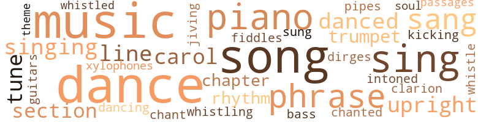
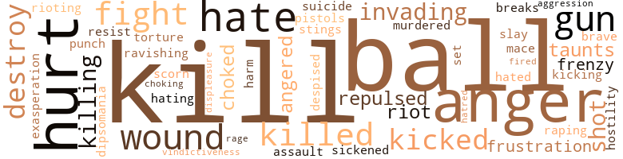
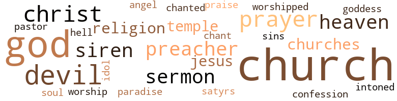

Sore Foots, by Cotton, Donald (1972)
98 music-related terms matched in this text.
Most frequent terms in this topic: dance (12); music (12); sing (7); piano (6); songs (6)
bass.n.07
Definition: the member with the lowest range of a family of musical instruments
| word | sentence |
|---|---|
| bass | The drums and bass fiddles induced vibrations into his heart ; every beat sent a surge of hot blood rushing through his veins ; and the guitars and xylophones tickled his nerves . |
carol.n.01
Definition: joyful religious song celebrating the birth of Christ
| word | sentence |
|---|---|
| carol | Muffled piano music swelled into the foyer through a closed door , and occasionally even a bar of a familiar Christmas carol could be recognized among the metallic sounds . |
| carol | " Come now , Margurite ; I 'm sure you know this one , " Professor Cray was saying as he began to play another carol on the ornate piano . |
chant.n.01
Definition: a repetitive song in which as many syllables as necessary are assigned to a single tone
| word | sentence |
|---|---|
| chant | The crowd 's chant stimulated the speaker , and he paused to smile . |
chapter.n.01
Definition: a subdivision of a written work; usually numbered and titled
| word | sentence |
|---|---|
| chapter | The minister , a thin man , who resembled a shrewd politician , used the second chapter of Exodus , verses one through seven as the text for his sermon , and quickly set the church into vibration with his silvery voice . |
| chapter | " It says here in John , fourteenth chapter , verses one and two , " Reverend Egglestone stood and designated the Bible passages about which he would " preach the funeral " . " |
clarion.n.01
Definition: a medieval brass instrument with a clear shrill tone
| word | sentence |
|---|---|
| clarion | The trumpeter sounded another clarion blast , and the eleven ladies in the queen 's court , escorted by officers of the fraternity , came forth gracefully ; each wore a gay , patronizing smile to conceal her disappointment as she slowly marched to her place beneath the coveted throne . |
cornet.n.01
Definition: a brass musical instrument with a brilliant tone; has a narrow tube and a flared bell and is played by means of valves
| word | sentence |
|---|---|
| trumpet | A stentorian trumpet blast indicated that the coronation was about to begin . |
| trumpet | The trumpet sounded again . |
dance.n.01
Definition: an artistic form of nonverbal communication
| word | sentence |
|---|---|
| dance | The soiled-bottom clouds , having closed ranks , had begun to sprinkle dust-like snow that did a swirling dance about the glowing street lamps , through the deserted vacant lots , and down peopled streets of a portion of Professor Cray 's estate which he had never seen . |
| dance | The dance had fallen on Professor Cray 's turn , as a faculty member , to chaperone , and he had come accompanied by his wife . |
| dance | " She comes so seldomly to such affairs , I do want her to have a good time , but I 'm afraid I 've long since past the age of dancing every dance . |
| dance | He avoided thinking about his dancing with her ; rather he distracted himself with counting the beats as he stepped on an imaginary dance pattern he pictured on the floor . |
| dance | What 's your title ? " his caller grunted out a rhythmical tune and skipped a snappy dance . |
| dance | The beds and the desks were pushed against the walls to create an arena ; and he , twisting his body like taffy , began a slow seductive dance to the consistently heavy beat of the " dirty blues " flowing from the phonograph as he slowly stripped his clothing piece-by-piece while Edward watched through wide eyes , unable to believe what he was seeing , while the others urged the dancer on with loud cheers of appreciation . |
| dances | Some fainted ; others went into seizures of screaming ; still others had emotional spasms and did wild dances about the church . |
dance.v.03
Definition: skip, leap, or move up and down or sideways
| word | sentence |
|---|---|
| danced | " Burn the rats , the roaches , the honkies ! " they intoned and danced after each explosion as though per forming a voodoo purification . |
| dance | " I want you to ask Joan to dance , " Professor Cray said when Edward hoping he would go away , at long last , emerged from the lavatory . |
| dance | " I would like to dance with Mrs. Cray very much , but I ca n't dance , " Edward tried to convince Professor Cray . |
| dance | You just wait for a slow tempo and ask her to dance . " |
| dance | " Perhaps Edward does n't care to dance , " Mrs. Cray observed somewhat frostily after she and Edward had politely greeted each other . |
| dancing | " Edward , please take me to my seat , " she said as she abruptly stopped dancing to remove her mask . |
| dance | The orchestra had begun to play the Grand Waltz , and McFeurst had stepped forward to be first to dance with the queen whenEdward decided to leave ; so he did not see Margurite ostentatiously push McFeurst away and delay the start of the waltz while McFeurst , bewildered , stood staring at her , and she sat glaring at him with a sinister look in her eyes . |
| dance | An upperclassman who had crashed the party and who had been acting effeminately all along , decided to dance . |
| danced | It would have been improper to laugh , so they cried ; it would have been unacceptable to pirouette in glee , so they had emotional spasms and danced about the church . |
dirge.n.01
Definition: a song or hymn of mourning composed or performed as a memorial to a dead person
| word | sentence |
|---|---|
| dirges | Those were the dirges of people doomed to work in the cotton fields of the malaria infested delta region where overseers ' whips , endless work , and mosquitoes ' infectious stings would bring an early death . |
guitar.n.01
Definition: a stringed instrument usually having six strings; played by strumming or plucking
| word | sentence |
|---|---|
| guitars | The drums and bass fiddles induced vibrations into his heart ; every beat sent a surge of hot blood rushing through his veins ; and the guitars and xylophones tickled his nerves . |
jive.v.01
Definition: dance to jive music; dance the jive
| word | sentence |
|---|---|
| jiving | " I do n't keep my end covered by jiving old , white men , " Mary shouted after her . |
kick.v.04
Definition: kick a leg up
| word | sentence |
|---|---|
| kicking | After kicking off her slippers ( she wore no stockings ) and throwing off the green dress which fitted her tightly , she moved before the full length mirror on the closet door to remove her silk lingerie . |
marimba.n.01
Definition: a percussion instrument with wooden bars tuned to produce a chromatic scale and with resonators; played with small mallets
| word | sentence |
|---|---|
| xylophones | The drums and bass fiddles induced vibrations into his heart ; every beat sent a surge of hot blood rushing through his veins ; and the guitars and xylophones tickled his nerves . |
music.n.01
Definition: an artistic form of auditory communication incorporating instrumental or vocal tones in a structured and continuous manner
| word | sentence |
|---|---|
| music | The bars and restaurants with blinking neon signs spewed their usual lively music into the evening air and casually adsorbed their patrons . |
| music | Muffled piano music swelled into the foyer through a closed door , and occasionally even a bar of a familiar Christmas carol could be recognized among the metallic sounds . |
| music | Beyond the closed door from where the music came , was a large drawing room where orange and red flames licked huge logs in an antique fireplace and cast flickering light on the rich provincial furnishings . |
| music | The music stopped . |
| music | Most were unopened for the sparse Sunday morning trade , but muffled , heavy beats of music could be heard issuing from some as remnants of the previous night that had too soon ended for most . |
| music | Suspended over the waxened dance floor , a gigantic mirror-covered globe rotating in beams of spotlights of ever changing colors sparkled down now red , now golden , and sometimes purple specks of light upon gayly costumed dancers moving rhythmically to the music of the orchestra . |
| music | Perplexed , he wished the music would end so Professor Cray would return from the dance floor . |
| music | He , shy and ashamed of his limp , began to feel awkward and unrelated as soon as he entered the large hall filled with suave people busy being sophisticated to strains of dinner music . |
| music | Upon returning to the dormitory , Edward had shut himself in his room where he had remained oblivious to the roaring laughter and the loud music down the hall as he sat at his desk writing in spurts and staring occasionally out the window over the dark campus lit in dotted strips by bald-headed street lamps . |
| music | Soon he was unable to resist bouncing his body to the music issuing from an ambitious record player under the bed . |
| music | " I 'm like the president of the university ; ai n't got no definite policies , " the dancer responded in rhythm with the music . |
| music | The dancer , the music , the laughter were all as if they had been part of a fantastic dream as he tried to remember how he had undressed and gone to bed . |
passage.n.06
Definition: a short section of a musical composition
| word | sentence |
|---|---|
| passages | " It says here in John , fourteenth chapter , verses one and two , " Reverend Egglestone stood and designated the Bible passages about which he would " preach the funeral " . " |
phrase.n.02
Definition: a short musical passage
| word | sentence |
|---|---|
| phrase | Champ , Edward 's somewhat unwilling confidante , knew well how his heart quivered at the mentioning of Margurite 's name , how he often sat for hours interpreting a single phrase she uttered , and how capriciously she treated him . |
| phrase | The driver steered his cab along the road outside the campus , turned in at an ornate iron gate , covered with frolicking satyrs , over which hung a corroded iron plaque with an engraved inscription , illegible , except for the phrase : " --- enters here " , and took a road inside the fence along the edge of the campus until he came to an ivy-covered red brick building . |
| phrases | He had formulated phrases of polished English in his mind , yet when he spoke only vernacular issued forth . |
| phrases | After searching his memory for formulas and phrases he had heard Aunt Martha and Reverend Egglestone use , he prayed . |
| phrase | " I do n't need pity , " Edward , who had understood only Tired Sam 's final phrase , retorted forgetting for a moment his respect for the old man . |
piano.n.01
Definition: a keyboard instrument that is played by depressing keys that cause hammers to strike tuned strings and produce sounds
| word | sentence |
|---|---|
| piano | " Come now , Margurite ; I 'm sure you know this one , " Professor Cray was saying as he began to play another carol on the ornate piano . |
| piano | Margurite was thinking as she shifted her body on the red divan , that was close to the fire at the opposite end of the room from the piano , and pointedly arranged her tangerine-colored dress to hang provocatively across the tops of her shapely black legs . |
| piano | " He 's old , and he 's white , but he 's a man , " Margurite was thinking as she , slightly swaying her hips , went to the piano . |
| piano | She sat beside Professor Cray on the piano stool . |
| piano | He put his arms around her soft shoulders , his wrinkled white hands over her delicate black fingers , and she subtly snuggled close to him as if enthusiastic about playing the piano , but actually so her hair would tickle his vulnerable cheek and so her whelming perfume could better reach his nostrils . |
| piano | Everyone stood as the procession began ; someone started to moan , then others , and later a sad sounding piano joined in bars behind , but caught up to guide the singers in doleful tempo ; Jesus keep me near the cross . |
pipe.n.04
Definition: a tubular wind instrument
| word | sentence |
|---|---|
| pipes | Down the stairs to one of the old apartment buildings , past a tin-covered fire door decorated with red paper , through a dimly lit corridor hung with electrical wiring and utility pipes , past a door marked " Janitor " was the small kitchen of Champ 's apartment . |
rhythm.n.04
Definition: the arrangement of spoken words alternating stressed and unstressed elements
| word | sentence |
|---|---|
| rhythm | " I 'm like the president of the university ; ai n't got no definite policies , " the dancer responded in rhythm with the music . |
| rhythm | Abruptly , rain began to beat furiously on the window panes in incoherent rhythm like millions of nervous fingers beating on as many heavy drums while winds blew frenzied blasts of lugubrious tones . |
section.n.01
Definition: a self-contained part of a larger composition (written or musical)
| word | sentence |
|---|---|
| section | Soon they were at the end of the wasteland and across the iron bridge that spanned the steep gorge of the turbid Forgeitan River ; then they turned so as to drive through the black section of the city where the warm weather had driven the people out their hot apartments to sit on their porches or to stand along the sidewalk . |
| section | Heat waves rose and shimmered in the air ahead as the taxi reached < he end of the governmental section and started through the downtown area of the city where instead of stately buildings and parks , there were ordinary office buildings , department stores , hotels , and restaurants sweltering in the heat . |
sing.v.02
Definition: produce tones with the voice
| word | sentence |
|---|---|
| singing | Suddenly , he was surrounded by a group of youths laughing and singing hysterically as they carried away their booty to divide it in safety down the Street . |
| sang | The ailan-thuses from which they sang were exotic with their palm-like , tropical leaves in the angular rays of the morning sun . |
| sing | " Why do all white people think colored people like to sing ? " |
| sing | " Oh , I know it , but I ca n't sing that one either , " she said and gave a meretricious smile which belied her thoughts . |
| sing | " Let 's hear you sing it Professor Cray . |
| sung | You have sung all the others so very well , " she said readjusting her hemline . |
| sing | Come , Margurite , where is your Christmas spirit ? " he began to sing another song . |
| sang | Now , she sang a rhythmical spiritual and , now , a sad blues in throaty tones as she prepared Christmas dinner . |
| sing | They came at noon and after dinner to digest the latest gossip , to sing songs , and to flirt with the many young women who invariably congregated nearby . |
| sing | The boys are getting ready to sing , so I 've got to run . |
| sang | Still , she liked neither the muddy river that inflowing sang a gurgling song , nor its dessicated banks which were empty of life . |
| sang | Only after they formed a semicircle about her throne and sang love songs to her beauty was her serious expression mitigated with a haughty smile . |
| sing | " Sure , that 's who took me , and we used to sing and shout . |
singing.n.01
Definition: the act of singing vocal music
| word | sentence |
|---|---|
| singing | The singing stopped as Reverend Egglestone stood to speak . |
song.n.01
Definition: a short musical composition with words
| word | sentence |
|---|---|
| songs | Here too , occasional sparrows which had cast their lots with the Street could be heard chirping morning songs from the roofs of bordering buildings and in the branches of ailanthus trees undaunted by most of their songs being unheard . |
| songs | Here too , occasional sparrows which had cast their lots with the Street could be heard chirping morning songs from the roofs of bordering buildings and in the branches of ailanthus trees undaunted by most of their songs being unheard . |
| song | Margurite thought , " if I did n't need that job in the English Department , I would -- " " There now , " Professor Cray finished his song and interrupted Margurite 's thoughts , " if I can do that well , l can imagine what you can do if you were n't so shy . |
| song | Come , Margurite , where is your Christmas spirit ? " he began to sing another song . |
| songs | The melodious songs and savory odors drifted from the kitchen into the adjoining living room where a small emaciated Christmas tree draped with silver tinsels , colored paper rings , and a few glass bulbs symbolized the holiday . |
| songs | They came at noon and after dinner to digest the latest gossip , to sing songs , and to flirt with the many young women who invariably congregated nearby . |
| song | " Listen , the Sigmas are serenading their queen just now , " she said as the Sigma fraternity burst into song . |
| song | Still , she liked neither the muddy river that inflowing sang a gurgling song , nor its dessicated banks which were empty of life . |
| song | Just as a cicada knows its song , it was as if he had known all his life what he was to do and how he was to do it . |
| songs | Then , by day , the sad songs of slaves on boats sailing southward rose from the chasm . |
| songs | Only after they formed a semicircle about her throne and sang love songs to her beauty was her serious expression mitigated with a haughty smile . |
soul.n.05
Definition: a secular form of gospel that was a major Black musical genre in the 1960s and 1970s
| word | sentence |
|---|---|
| soul | Oh , Lamb of God , Be my glorious ever 'Til my soul shall rest Beyond the river . |
theme.n.03
Definition: (music) melodic subject of a musical composition
| word | sentence |
|---|---|
| theme | Using the text as a theme , he began to stir the mourners , almost mechanically , to higher and higher levels of emotions with his words and gestures like a man compressing a giant spring . |
tone.v.01
Definition: utter monotonously and repetitively and rhythmically
| word | sentence |
|---|---|
| chanted | " Burn , baby , burn ! " they chanted . |
| intoned | " Burn the rats , the roaches , the honkies ! " they intoned and danced after each explosion as though per forming a voodoo purification . |
tune.n.01
Definition: a succession of notes forming a distinctive sequence
| word | sentence |
|---|---|
| line | They just want to keep them Cadillacs , fine homes in in-te-grated neighborhoods , and token jobs whitey 's let them get to keep you in line . |
| tune | " Do you think you could teach me how to play ' Silent Night ' , Professor Cray ? " she asked when they had finished the tune , " l used to be able to when l was a child , but I 've forgotten how . " |
| line | In line for an ambassadorship , or some kind of foolishness . " |
| tune | What 's your title ? " his caller grunted out a rhythmical tune and skipped a snappy dance . |
upright.n.02
Definition: a piano with a vertical sounding board
| word | sentence |
|---|---|
| upright | Finally , the hour he had awaited arrived , and after again consulting his small watch , he quickly stretched his long , thin frame upright , picked up his bag , straightened himself , then walked determinedly into the adjoining room where a bloated , old woman , dressed in a tattered robe , her bulk spread over a backless , wooden chair sat staring out an open window at the street below . |
| upright | She rose upright on her bed . |
violin.n.01
Definition: bowed stringed instrument that is the highest member of the violin family; this instrument has four strings and a hollow body and an unfretted fingerboard and is played with a bow
| word | sentence |
|---|---|
| fiddles | The drums and bass fiddles induced vibrations into his heart ; every beat sent a surge of hot blood rushing through his veins ; and the guitars and xylophones tickled his nerves . |
whistle.v.01
Definition: make whistling sounds
| word | sentence |
|---|---|
| whistling | " Pride ! " he shouted as the stick , whistling through the air , arrived with a loud , vicious smack against the naked buttocks of the pledgee who , screaming , sank to the floor . |
| whistle | Edward heard the paddle whistle through the air for a second only ; then pain so unbearable it bordered on pleasure seized his body and was followed by cold numbness as the stick banged with explosive force against his buttocks . |
| whistled | Because the wind whistled into everyone 's ears , most of the words which Reverend Egglestone read from his Bible went unheard . |
119 violence-related terms matched in this text.
Most frequent terms in this topic: kill (9); ball (8); anger (7); hate (7); hurt (7)
aggravation.n.01
Definition: an exasperated feeling of annoyance
| word | sentence |
|---|---|
| exasperation | " Have you lost your little colored mind ? " she hissed in exasperation as she tried to pass him . |
aggression.n.01
Definition: a disposition to behave aggressively
| word | sentence |
|---|---|
| aggression | Unawares , he , even before he had challenged her statement , had committed an aggression against her . |
anger.n.01
Definition: a strong emotion; a feeling that is oriented toward some real or supposed grievance
| word | sentence |
|---|---|
| anger | Edward 's reaction , because of Dr. Basilus ' treatment of his work , ranged from embarrassment at first , to anger finally . |
| anger | Because he thought Dr. Basilus had deliberately read his poem in a manner to humiliate him , Edward 's throat was parched from anger , and he made his way to the hall drinking fountain . |
| anger | McFeurst 's voice sounded as Edward sought the source of his anger in the darkness Lights streamed on . |
| anger | Edward 's knees doubled as the paddle smashed against his flesh for the last time ; still he made no outcry though tears of anger clouded his eyes as he , faint , sank into McFeurst 's arms . |
| anger | His whole consciousness had become fuzzy with anger ; and he could see only a vast field of gray . |
| anger | He trembled as deep anger stirred inside him because Mrs. Cray had ruined the beautiful , hand-carved set . |
| anger | Edward stiffened in anger . |
anger.v.02
Definition: become angry
| word | sentence |
|---|---|
| angered | He was angered by the other members ' taunts because he had been unable to make Edward either fall or scream . |
| Angered | Angered by her taunts and determined to prove himself a man , Edward gathered his nerves , looked straight into her eyes , and approached her with quick , firm steps to take the glass . |
contemn.v.01
Definition: look down on with disdain
| word | sentence |
|---|---|
| despised | Because her father had prevailed as he squandered the family 's land and wealth on his black mistresses and in wild speculation , she , their only child , had despised her father and grown to resemble her mother in every way : rigid , self-righteous , proud , and condescending toward black skin . |
| scorn | Bitter , Aunt Martha 's contempt for men grew to rival her scorn for all blacks , and she remained unmarried ostensibly to care for her hypochondriac mother . |
craze.n.02
Definition: state of violent mental agitation
| word | sentence |
|---|---|
| frenzy | Then , in a sudden uncontrollable frenzy , he - leaving a trail of thick , yellow vomit - boiled from the house . |
| frenzy | Soon their wailing became deafening , and the frenzy of their actions grew terrifying . |
destroy.v.04
Definition: put (an animal) to death
| word | sentence |
|---|---|
| destroy | " We 're going to change things at this place even if we have to destroy it , " McFeurst , oblivious to the thoughts raging in Edward 's mind , continued . |
| destroy | The doctors asked me to accept the blame so as not to destroy him all together , and I 've never told him . |
| destroy | You 'd destroy this man ! " |
dipsomania.n.01
Definition: an intense persistent desire to drink alcoholic beverages to excess
| word | sentence |
|---|---|
| dipsomania | at times , dipsomania had been . |
displeasure.n.01
Definition: the feeling of being displeased or annoyed or dissatisfied with someone or something
| word | sentence |
|---|---|
| displeasure | Unaccustomed to his being interrupted , Reverend Egglestone leaned forward , then back again and pursed his lips to show his displeasure . |
fight.n.05
Definition: a boxing or wrestling match
| word | sentence |
|---|---|
| fight | The fight was over so quickly that Mrs. Cray was only a short distance away , but McFeurst followed so dangerously close , Edward thought he would surely have to fight again until Mrs. Cray , halting in front a store-front church , entered ; and he , amazed she had known McFeurst would never pursue them there , quickly followed . |
fight.v.02
Definition: fight against or resist strongly
| word | sentence |
|---|---|
| fight | She had since become a faint memory , a childish incident in his past , a being as far removed as the dead , yet as she stood before him , he had to fight tingling nerves to prevent his reacting . |
| fight | Now , after what you 've done and my sticking up for you and all , I 've got to go back in there and fight for my life . |
| fight | The fight was over so quickly that Mrs. Cray was only a short distance away , but McFeurst followed so dangerously close , Edward thought he would surely have to fight again until Mrs. Cray , halting in front a store-front church , entered ; and he , amazed she had known McFeurst would never pursue them there , quickly followed . |
fracture.n.01
Definition: breaking of hard tissue such as bone
| word | sentence |
|---|---|
| breaks | It poked its rays obliquely into breaks between the decrepit buildings and scintillated brilliantly into a wild pattern of infinite colors off the billions of pieces of sparkling debris that littered the vacant lots . |
frustration.n.03
Definition: a feeling of annoyance at being hindered or criticized
| word | sentence |
|---|---|
| frustration | To smile at all was difficult , but she was determined that none should detect her frustration . |
| frustration | He knew nothing except his frustration ; he could see nothing except his failure ; he could hear nothing except the wind sibilantly repeating the words of the dean . |
fury.n.01
Definition: a feeling of intense anger
| word | sentence |
|---|---|
| rage | he had begun , yet he radiated an extrasensory vibration of rage which undermined his demeanor . |
gag.v.06
Definition: cause to retch or choke
| word | sentence |
|---|---|
| choked | " Well , at least you 're candid , " the interrogating voice choked with laughter . |
| choking | The lump in his throat reached choking proportions as he took a final look about the home he was about to leave . |
| choked | " Goodbye , Aunt Martha , " he choked as he started out the door . |
gun.n.01
Definition: a weapon that discharges a missile at high velocity (especially from a metal tube or barrel)
| word | sentence |
|---|---|
| guns | Two policemen , with their guns drawn , popped out a doorway and stood in the path . |
| guns | They 've got ; guns ! |
| gun | He could see the back of one of the policemen , with gun drawn , crouched behind a mailbox . |
| guns | There were more shots from the distant guns , and the officers were again occupied . |
| gun | The man who own the liquor store next door heard all the shootin ' and seein ' the boys go pass , grabbed his gun too and ran out in the street . |
hate.n.01
Definition: the emotion of intense dislike; a feeling of dislike so strong that it demands action
| word | sentence |
|---|---|
| hate | Honest , man , I 'm your friend and hate to see you always standing around by yourself . " |
| hate | Only intense love , or immense hate could have kindled their light . |
| hatred | Feeling an intense hatred for the small timepiece which suddenly had become a symbol of his having left her to die , he - half in an effort to vindicate himself and half out of vindictiveness - tore the watch from its chain and dashed it to the floor where it broke into small pieces of glass and metal . |
hate.v.01
Definition: dislike intensely; feel antipathy or aversion towards
| word | sentence |
|---|---|
| hate | " I hate those things , " Margurite , still shaking from fright , said unamused . |
| hate | " Maybe it 's because I hate him , " she said hesitantly . |
| hated | " You hated him ? |
| hate | You could n't hate anyone , Margurite , " he said , unable to associate her with such a base emotion . |
| hate | " Yes , I hate him because he left me after I loved him so much . |
| hating | Will you come , or will you remain in darkness hating your black self and loving the white devil ? |
| hate | I hate showing gratitude , and gratitude is what they always expect . " |
hostility.n.01
Definition: a hostile (very unfriendly) disposition
| word | sentence |
|---|---|
| hostility | At the end of class , the incident seemed forgotten , but Edward could sense intangible hostility radiating from Dr. Hatkins as he left the room . |
injury.n.01
Definition: any physical damage to the body caused by violence or accident or fracture etc.
| word | sentence |
|---|---|
| hurt | Only some frustrated passion or deep hurt could have woven such a sad design . |
| hurt | She said she want t ' be sure they 're fixed right , " he said in a hurt tone . |
| hurt | When a student came to tell him that a woman wanted him on the telephone , his deep hurt turned into firm resolution . |
| harm | " Madam , I mean no harm . |
| hurt | If whitey 's hurt , it 's not my concern . |
| hurt | " That 's not so , " Bunny , a little hurt , fended . |
invade.v.01
Definition: march aggressively into another's territory by military force for the purposes of conquest and occupation
| word | sentence |
|---|---|
| invading | The din of chaos was behind him , but forever threatening to overtake him as if it were chasing him as the mob continued their destruction from store to store , shop to shop down the Street like an invading army sacking a conquered city . |
| invading | Besides invading her sanctuary , he had challenged her . |
kick.v.04
Definition: kick a leg up
| word | sentence |
|---|---|
| kicking | After kicking off her slippers ( she wore no stockings ) and throwing off the green dress which fitted her tightly , she moved before the full length mirror on the closet door to remove her silk lingerie . |
kick_back.v.02
Definition: spring back, as from a forceful thrust
| word | sentence |
|---|---|
| kicked | " Margurite , you 're taking it all wrong , " he said sympathetically as he kicked a half-buried stone from the clay . |
| kicked | She kicked off her sandals and started to undress . |
| kicked | Unconsciously , he kicked the hard earth about the roots of his tree , and his thoughts turned to her beautiful , black body being lowered beneath the earth to decay . |
kill.v.10
Definition: cause the death of, without intention
| word | sentence |
|---|---|
| kill | " They 's go 'n kill that po ' soul brother , " someone shrieked . |
| kill | I bet a good piece o ' pussy and a cold drink o ' water would kill 'em all dead , " Champ wagered pouring himself another glassful of whiskey while Edward groomed himself . |
| killed | Although he fathered only one legitimate son , because he possessed a strange , animal-like charm , he was able to boast veraciously of his having sired half the children - black and white - in his county before he , at the age of sixty-three , was killed in a duel by a neighbor for deflowering a girl of fifteen . |
| kill | " Man , you 's high as a Georgia pine , and your wife 's go 'n kill you if 'n she see that , " Charles , Champ 's bachelor brother-in-law , admonished jokingly showing his scattered teeth in a grin . |
| Kill | " Kill him , Saundra ! |
| Kill | Kill him ! " |
| killed | If it were n't for God , the white folk would have killed all the niggers ; and if it were n't for white folk , the big niggers would eat all the little niggers , " he laughed at his intended display of wit . |
| kill | " Holler , man , holler , " McFeurst urged , " or he 'll kill you for sure . " |
| kill | " Did I kill him ? " |
| kill | He had never imagined , he would ever kill a man . |
| kill | You have given me the strength I need with your love , yet if we leave together , I know it would kill him , and T could n't bear to kill him too . |
| kill | You have given me the strength I need with your love , yet if we leave together , I know it would kill him , and T could n't bear to kill him too . |
| kill | They had not yet reached that casual stage at which women exercise kindness toward their prey ; they , still young enough to envision a multitude of men voluntarily prostrated before them , were rather like well fed cats that upon encountering mice , kill them , not because of hunger , but for amusement . |
| Kill | " Kill him ! |
| killed | Two black people was killed to keep the honest , man his gold . |
| killing | " The ball passed right through her head killing her instantly . |
| killed | At another time , he would have killed the roach . |
killing.n.02
Definition: the act of terminating a life
| word | sentence |
|---|---|
| killing | Because she was then incurably ill with a slow killing disease contracted from his father , he spent the next six years nursing her as he helplessly watched the malady erode her body and crumble her mind . |
mace.n.01
Definition: (trademark) a liquid that temporarily disables a person; prepared as an aerosol and sprayed in the face, it irritates the eyes and causes dizziness and immobilization
| word | sentence |
|---|---|
| mace | Swinging her gigantic handbag like a mace , she maneuvered to attack the third , but he quickly fled . |
murder.v.01
Definition: kill intentionally and with premeditation
| word | sentence |
|---|---|
| murdered | Professor Cray was seven when lie stood next to his sickly mother during his father 's funeral and saw the somber proceedings transformed into a spectacle by the unexpected entrance of the woman whose jealous husband had murdered his father . |
| slay | To slay in school , she needed money and was too proud to let us know . |
musket_ball.n.01
Definition: a solid projectile that is shot by a musket
| word | sentence |
|---|---|
| balls | More than Edward 's acceptance would be decided as the small wooden box with a marble-sized hole in its top passed among the members and each dropped in one of his two balls - white or black . |
| ball | Everyone in the hall knew one of the thirteen candidates gathered in an anteroom ( the others would be members of the court ) would be crowned queen of the ball . |
| ball | Professor Cray was especially elated because she had consented to come to the ball . |
| ball | Edward too had come to the ball because he had heard that Margurite was a candidate for the throne . |
| ball | His pride prevented his inquiring directly , but his curiosity had compelled him to come to the ball to see what might be revealed . |
| ball | But , because he had not seen her since the ball , he had used the check as an excuse to telephone her , and he had successfully reached her that afternoon . |
| ball | Night , lurking at the edge of the sky , seemed eager for the great , red ball to complete its exit so it might repossess the city which was already lit and prepared for darkness . |
| ball | Why , all of the green power that we can get from black power rolled into a little ball and ignited could n't run our power plant for a day , not to speak of our other expenses . |
| ball | " The ball passed right through her head killing her instantly . |
open_fire.v.01
Definition: start firing a weapon
| word | sentence |
|---|---|
| fired | he knocked his arm up as he fired , and the bullet struck your Aunt Martha a sitlin ' in her window , killin ' her dead on the spot , " Tired Sam finished his narrative , then sat motionless . |
pain.v.02
Definition: cause emotional anguish or make miserable
| word | sentence |
|---|---|
| hurt | At that time , he hurt and angry , swore before Champ never again to speak to her . |
| hurt | " I was black before you were , but I 'm not going to hurt Cray just to create a symbol , " Edward penetrated McFeurst with his eyes . |
pistol.n.01
Definition: a firearm that is held and fired with one hand
| word | sentence |
|---|---|
| pistols | They stood - the blue line with pistols drawn and the crowd - confronting each other . |
punch.n.01
Definition: (boxing) a blow with the fist
| word | sentence |
|---|---|
| punch | He ducked a punch the second man swung at his head , feinted with his fists , then thrust his knee hard into his groin . |
rape.n.03
Definition: the crime of forcing a woman to submit to sexual intercourse against her will
| word | sentence |
|---|---|
| assault | Indeed , he was to be the first assault in a war , and he was determined to be victorious as he continued his way down the Street . |
rape.v.01
Definition: force (someone) to have sex against their will
| word | sentence |
|---|---|
| ravishing | After the city had fallen , because the grateful Union Army spared Red Rock while burning and ravishing all the surrounding estates , he became one of the richest landowners in the state . |
| raping | I bet you would n't defend your own mother had I been white and raping her ! " he shouted as he stalked Edward who backed to ' a wall to protect his rear . |
repel.v.03
Definition: force or drive back
| word | sentence |
|---|---|
| repulsed | The thought of his mouth on her face repulsed her . |
| Repulsed | Repulsed , Margurite was unable to imagine why he wanted to walk there , but as they continued to more secluded portions of the river , the filth left by people at least was less , and there was only barren , dusty clay . |
resist.v.04
Definition: withstand the force of something
| word | sentence |
|---|---|
| resist | Soon he was unable to resist bouncing his body to the music issuing from an ambitious record player under the bed . |
riot.n.01
Definition: a public act of violence by an unruly mob
| word | sentence |
|---|---|
| riot | They may riot , but this is one back seat they 'll never ride on . " |
| riot | He had been surprised to find hardly perceptible the destruction of the fire and the riot that had been consuming the Street when he had departed three years ago . |
rioting.n.01
Definition: a state of disorder involving group violence
| word | sentence |
|---|---|
| rioting | Edward had retreated as soon as the rioting began , lie proceeded in the direction of the train station as fast as he could walk . |
shoot.v.02
Definition: kill by firing a missile
| word | sentence |
|---|---|
| shot | Instantly , he heard two quick , decisive explosions , and a sharp pain shot through his chest as he was knocked hard to the pavement where with his vision spinning , his heart racing , his nerves taut , he , faint , awaited death . |
| shot | Slowly , he rolled over to discover he had been lying on the small , gray box that had been shot from the hand of the youth who had just asked him to lead . |
sic.v.01
Definition: urge to attack someone
| word | sentence |
|---|---|
| set | He placed the set on the ground and started to back away . |
sicken.v.04
Definition: make sick or ill
| word | sentence |
|---|---|
| sickened | My mother ! " he wailed falling dumbfounded to his knees and tearing his hair in anguish as his consciousness became a vertigo , his stomach sickened by the horrible truth from which he could not escape . |
sting.n.03
Definition: a painful wound caused by the thrust of an insect's stinger into skin
| word | sentence |
|---|---|
| stings | Those were the dirges of people doomed to work in the cotton fields of the malaria infested delta region where overseers ' whips , endless work , and mosquitoes ' infectious stings would bring an early death . |
suicide.n.01
Definition: the act of killing yourself
| word | sentence |
|---|---|
| suicide | Another reason is that it would be suicide . |
torment.v.01
Definition: torment emotionally or mentally
| word | sentence |
|---|---|
| torture | " Why must you always torture me , ridicule me about this thing , " she said weeping . |
twit.n.02
Definition: aggravation by deriding or mocking or criticizing
| word | sentence |
|---|---|
| taunts | He was angered by the other members ' taunts because he had been unable to make Edward either fall or scream . |
| taunts | Angered by her taunts and determined to prove himself a man , Edward gathered his nerves , looked straight into her eyes , and approached her with quick , firm steps to take the glass . |
vindictiveness.n.01
Definition: a malevolent desire for revenge
| word | sentence |
|---|---|
| vindictiveness | Feeling an intense hatred for the small timepiece which suddenly had become a symbol of his having left her to die , he - half in an effort to vindicate himself and half out of vindictiveness - tore the watch from its chain and dashed it to the floor where it broke into small pieces of glass and metal . |
weather.v.01
Definition: face and withstand with courage
| word | sentence |
|---|---|
| brave | You 're a woman , and I 'm a man ; we have a right to love each other if we 're brave enough to take it . |
wound.n.01
Definition: an injury to living tissue (especially an injury involving a cut or break in the skin)
| word | sentence |
|---|---|
| wound | A quick search with his eyes revealed the other nursing his wound in a doorway across the street . |
| wound | He had received many intangible scars from his struggle upward , and he was not inclined to ever forget a wound . |
| wound | He had been used and then discarded like a toy that had become tiresome , Edward thought as his taxi wound along the lonely country road leading to Red Rock . |
| wounds | He did not reply , but after giving her a straight look , walked away and found himself a quiet corner in which he could safely soothe his wounds . |
| wound | his soul felt yellow the yellow of an open , festered wound . |
128 religion-related terms matched in this text.
Most frequent terms in this topic: church (32); God (17); devil (9); Christ (7); prayer (6)
chant.n.01
Definition: a repetitive song in which as many syllables as necessary are assigned to a single tone
| word | sentence |
|---|---|
| chant | The crowd 's chant stimulated the speaker , and he paused to smile . |
church.n.02
Definition: a place for public (especially Christian) worship
| word | sentence |
|---|---|
| church | Because Aunt Martha had not gone to church as usual , he had forgotten the day for a moment , but lack of people going to work along the Street soon reminded him since , as on every Sabbath , most of the people rose late The decaying red stone apartment buildings and wooden store fronts that he passed , rested upon their precarious foundations like a row of pyorrhea-infected teeth as they stretched in unimaginative long blocks , broken only at irregular intervals by rubbish-cluttered vacant lots . |
| church | " I bet Rever ' nd Harrow is go 'n tear up the church this morning , " said the one with a broad stomach pouch of the type serenity in religion produces . |
| church | " Yes , suh , I do n't feel like I 's been to church if 'n the preacher do n't make me cry . " |
| church | Heard Rever ' nd Epps tear up his church down there . " |
| churches | The two men turned into one of the storefront churches as abruptly as they had started to walk in front of Edward and left him to hasten alone on the empty street . |
| church | " Then , he passed the church , looked up , waved his hand , and said , ' Goodbye God ! ' " |
| church | She , continuing to study the driver , disliked the implications of his bushy hair , but deduced from his strange eyes and his kindness that he was a church minister , and relaxed in her seat . |
| church | " It 's not a church . |
| church | " Edward , let 's go to church with them this morning , " Mrs. Cray said pensively as she suddenly became depressed . |
| church | " I have n't been to such a church since I was a girl . |
| church | " I 's so glad you two 's goin ' t ' church with us this mornin ' , " Big Mama Lou grinned with her whole face . |
| church | " Yes , suh , we - 's mighty ' bliged t ' have you , " Champ added when he was told his friends were accompanying him to church . |
| church | " You say she 's all right. ; then she 's go 'n go t ' church with us ? " |
| church | The fight was over so quickly that Mrs. Cray was only a short distance away , but McFeurst followed so dangerously close , Edward thought he would surely have to fight again until Mrs. Cray , halting in front a store-front church , entered ; and he , amazed she had known McFeurst would never pursue them there , quickly followed . |
| church | Service was in progress in the packed church where the entire congregation turned to stare at them as they entered . |
| church | Aching from the blows he had received , Edward made no pretenses that he was delighted to be in the church . |
| church | The minister , a thin man , who resembled a shrewd politician , used the second chapter of Exodus , verses one through seven as the text for his sermon , and quickly set the church into vibration with his silvery voice . |
| church | At first , Edward thought she was going to embarrass him by shouting as the congregation was doing ; instead , she abruptly stood , knocking over her chair , and ran from the church . |
| church | McFeurst and his companions , waiting with clubs , surrounded Edward as he emerged from the church , but Mrs. Cray never looked back . |
| church | He had already passed Reverend Egglestone 's church without stopping because he wanted more time before being con - demned for his having left Aunt Martha to die . |
| church | Reverend Egglestone lived upstairs over his storefront church where the comfortable interior of his home was completely incongruent with the shabby exterior of the building as was to be expected since it was the custom of the Street that , a minister should live among his people , but more comfortably than they . |
| church | He knew the only hope for a decent burial would be through a church collection and felt he would be unable to endure his standing before the congregation to beg for money . |
| church | And , I know you wo n't forget the church as the Lord has remembered you . |
| church | Outside the storefront church , the sky was the whitish blue of tempered steel , and the air was as cold in temperature as the sky in hue Inside , it was as dim as dusk , and a stifling gloom prevailed . |
| church | Because elderly members of the congregation filled the church , he wondered why they who were so near their ends themselves had come to be with the dead . |
| church | And , others began to weep and to moan as the coffin was rolled past them at a dirgeful pace to the front-center of the church beneath the raised platform of the pulpit . |
| church | She paid her dues regularly to the church and attended as often as the Lord gave her strength . |
| church | Some fainted ; others went into seizures of screaming ; still others had emotional spasms and did wild dances about the church . |
| church | Tears ran down his cheeks , and he had to struggle to breathe as he tried to push the women away and to run from the church , but the more he struggled , the more enthusiasm and determination they used in trying to comfort him . |
| church | It would have been improper to laugh , so they cried ; it would have been unacceptable to pirouette in glee , so they had emotional spasms and danced about the church . |
church.n.04
Definition: the body of people who attend or belong to a particular local church
| word | sentence |
|---|---|
| churches | Too , the taverns , the stores , the churches were like those along the Street . |
| churches | " Which one o ' them churches did you say you preach at ? " |
| church | And , what was the matter with you at that church ? |
| Church | Calvary Baptist Church was gone . |
| church | At the stroke of ten - a bell sounded by an old deacon - the doors of the church were swung open to permit Reverend Egglestone followed by the elders to march in stoically . |
church_service.n.01
Definition: a service conducted in a house of worship
| word | sentence |
|---|---|
| church | Here , there were only old black people on their way home from late Christmas church service , young black people making their rounds to taverns to celebrate the Yuletime holiday , and a few black women shivering in doorways as they hoped yet for a " trick " before the cold wind and snow would drive them indoors . |
confession.n.05
Definition: the document that spells out the belief system of a given church (especially the Reformation churches of the 16th century)
| word | sentence |
|---|---|
| confession | Edward , captivated , had listened to her raving confession , but had managed to keep the impact of the inescapable from penetrating his mind , until his eyes were drawn to one of the silver earrings that had fallen from the black case at his feet . |
curate.n.01
Definition: a person authorized to conduct religious worship
| word | sentence |
|---|---|
| pastor | Lord , what 's I go 'n say if 'n the pastor come ' long here just now . " |
eden.n.01
Definition: any place of complete bliss and delight and peace
| word | sentence |
|---|---|
| paradise | We 'll only be relieved of our despair , but he 'll lose his white paradise . |
| heaven | " This ai n't heaven , " he said knowingly , " in this world there are little niggers , and over them are big niggers ; over them are white folk ; and over them is God . |
| heavens | The browning trees seemed to be stretching their nearly exhausted branches toward the heavens , if not to beg for rain , then to call for moderation from the searing sun . |
| heavens | It was as if the heavens were endeavoring to wash away something taint and tenacious from the earth with a reenactment of the storm in Genesis as the incessant rains turned the campus into a thick brown soup of mud mixed with drowned vegetation that froze solid during the nights . |
| heaven | The tree was an ailanthus , a tree of heaven , the only kind he , as a boy , had ever seen along the Street . |
| Heaven | Uh-um-um-um , " he went on praying and humming while evoking every spirit and plea of which he could think to insure Aunt Martha 's place in Heaven . |
god.n.03
Definition: a man of such superior qualities that he seems like a deity to other people
| word | sentence |
|---|---|
| God | " T ' educate your mind , yes , suh ; but t ' deny God , no , ' So ' Foots ! |
| God | God forgive me ; he ai n't had no good gin in such a long time . |
| gods | They were strange company for two gods . |
| God | At first I thought you were passing , but God sure missed you white women when he handed out ' hind parts , " she thought . |
| God | " If 'n they 'd wrote the Bible right , it 's read : And God looked ' cross the voic an ' said , ' I think I 'll make Me a end ! ' |
| God | " This ai n't heaven , " he said knowingly , " in this world there are little niggers , and over them are big niggers ; over them are white folk ; and over them is God . |
| God | We all have souls ; God gave us them . " |
| God | God had nothing to do with it . " |
| God | While some of our students were marching and shouting slogans , you - Edward Rois - loosened the knot with your own wit and brain given to you by God . |
| God | Tears copiously flowed from his eyes until he looked into the pale , wintry sky and the idea of Margurite 's soul returning to her God who had allowed her to buy death so early in life seized his mind . |
| god | And , he mused on the intriguing little depression of her navel which was as per fectly placed as if some god had touched the spot with his finger on her softly rounded belly . |
| God | No man is powerful enough to stop my loving you ; there 's no God to prevent it . |
| gods | " We believe in God , madam , we have our own gods , black Gods . " |
| Gods | " We believe in God , madam , we have our own gods , black Gods . " |
| Gods | " Black Gods ? |
| gods | " We believe in the gods of our forefathers : Hermes - god of lightning , Shango - god of thunder , Ifa - god of prophecy , Helio - god of the sun , and Oshu - god of the moon . |
| God | " Come on , man , rise , shine , and give God glory ! " she shouted to Champ who grunted back lazily . |
| God | Just go , and thank your God that 's all you have to do . " |
| God | Yes , as I done already tol ' you from the beginnin ' : What could o ' been ai n't , for real ; still it 's always there as somethin' that can happen in God 's world o ' chance . |
| God | least he had gone through the motions of lowering his head , closing his eyes , and talking to the darkness while presuming God to be listening . |
| God | He had not prayed since he had come to Oliver University , not because he disbelieved in either God or prayer , but because he had seldomly thought of them . |
| God | He 's mo ' ' dapt at findin ' ways t ' plant the dead than he 's at helpin ' the livin ' t ' find God . " |
| God | God bless her ; she often spoke of how she wished that she could write better so she could 've answered your letters . |
goddess.n.01
Definition: a female deity
| word | sentence |
|---|---|
| goddess | Had she at that moment frozen , become immobile , she could have easily been worshipped as an ebon idol of Ishtar , or of Isis , or of any other catalogued goddess of beauty . |
hell.n.01
Definition: any place of pain and turmoil
| word | sentence |
|---|---|
| hell | I would go to hell if I could spend the nights in your bed there . |
idol.n.01
Definition: a material effigy that is worshipped
| word | sentence |
|---|---|
| idol | Had she at that moment frozen , become immobile , she could have easily been worshipped as an ebon idol of Ishtar , or of Isis , or of any other catalogued goddess of beauty . |
jesus.n.01
Definition: a teacher and prophet born in Bethlehem and active in Nazareth; his life and sermons form the basis for Christianity (circa 4 BC - AD 29)
| word | sentence |
|---|---|
| Jesus | They say Jesus Christ 's a man . " |
| Jesus | " Do n't believe in Jesus Christ , the Lord ! |
| Jesus | Everyone stood as the procession began ; someone started to moan , then others , and later a sad sounding piano joined in bars behind , but caught up to guide the singers in doleful tempo ; Jesus keep me near the cross . |
messiah.n.01
Definition: any expected deliverer
| word | sentence |
|---|---|
| Christ | They say Jesus Christ 's a man . " |
| Christ | Jest ai n't Christ ' in t ' be peekin ' in at 'em , so you jest stay ' way from that door . |
| Christ | We just do n't believe in the white-skinned , blonde-haired , blueeyed Christ the white devil has chained us with . " |
| Christ | " Do n't believe in Jesus Christ , the Lord ! |
| Christ | He 'll learn Christ by the times he 's my age . |
| Christ | " Do n't believe in Christ ; Father help him . |
| Christ | Reverend Egglestone finished his sermon and had collection baskets passed while the congregation groaned : Up the hill where Christ had gone To plead for all our sins , I once was lost , but now I 'm found ; Was blind , but now I see . |
praise.n.02
Definition: offering words of homage as an act of worship
| word | sentence |
|---|---|
| praise | Now everyone can see that our English Department rates with the best in the country , " Dr. Basilus stepped forward with praise as the president was shaking Edward 's hand . |
prayer.n.01
Definition: the act of communicating with a deity (especially as a petition or in adoration or contrition or thanksgiving)
| word | sentence |
|---|---|
| prayer | " We 're here , " McFeurst interrupted Big Mama Lou 's prayer . |
| prayer | Then , he thought of prayer . |
| prayers | Aunt Martha had prayed nightly despite there being little evidence that her prayers were ever answered ; and he too had sometimes prayed at her church - at . |
| prayer | He had not prayed since he had come to Oliver University , not because he disbelieved in either God or prayer , but because he had seldomly thought of them . |
| prayer | Desperate , he was willing to try even prayer , to lower his head , to close his eyes , and to plead to the darkness . |
| prayer | Rois ! " someone called , interrupting his prayer . |
| prayer | He , himself , became so emotional near the end of his prayer that he grabbed the split tails of Iris formal coat and twirled in a frenetic circle as he called on the Lord , God , Jesus , Jehovah , and the Father , Son , and Holy Ghost in one last effort and breath before he fell exhausted into his chair . |
preacher.n.01
Definition: someone whose occupation is preaching the gospel
| word | sentence |
|---|---|
| preacher | " Yes , suh , I do n't feel like I 's been to church if 'n the preacher do n't make me cry . " |
| preacher | Gooder yet , " TiredSam added raising one of his long , slender , black arms into the air in the manner of a preacher , " jest remember we 's all jest points on the rim o ' the wheel . |
| preacher | " He 's a jack-legged preacher . |
| preacher | Yeah , he 's a preacher all right . |
| preacher | Then , came a hungry ol' eagle just uh flappin ' ' round , " the preacher flapped his arms like wings and walked about the pulpit to mimic the eagle . |
religion.n.01
Definition: a strong belief in a supernatural power or powers that control human destiny
| word | sentence |
|---|---|
| religion | " I bet Rever ' nd Harrow is go 'n tear up the church this morning , " said the one with a broad stomach pouch of the type serenity in religion produces . |
| religion | Religion bores me in general , and loud religion like theirs gives me a headache . |
religion.n.02
Definition: an institution to express belief in a divine power
| word | sentence |
|---|---|
| Religion | Religion bores me in general , and loud religion like theirs gives me a headache . |
saint.n.02
Definition: person of exceptional holiness
| word | sentence |
|---|---|
| angel | She was dressed in pure white and looked like a chocolate-covered angel . |
satan.n.01
Definition: (Judeo-Christian and Islamic religions) chief spirit of evil and adversary of God; tempter of mankind; master of Hell
| word | sentence |
|---|---|
| devil | " I do n't use the white devil 's name anymore . |
| devils | You 've just gone all out to impress white devils and their Negro servants who have brainwashed you . |
| devil | The finger points to that white devil in the English Department . " |
| devil | " White devil ? |
| devil | Will you come , or will you remain in darkness hating your black self and loving the white devil ? |
| devil | " The white devil thinks we want his women . |
| devil | " White devil ? |
| devil | If 'n mo ' colored mens fell ' bout colored womens the way you do , we 'd all git some place , " " Yes , madam , that young man has just been brainwashed by the white devil . |
| devil | We just do n't believe in the white-skinned , blonde-haired , blueeyed Christ the white devil has chained us with . " |
| devil | " You , a black man , hit me , a black man , about a white devil she-bitch ! " |
satyr.n.02
Definition: one of a class of woodland deities; attendant on Bacchus; identified with Roman fauns
| word | sentence |
|---|---|
| satyrs | The driver steered his cab along the road outside the campus , turned in at an ornate iron gate , covered with frolicking satyrs , over which hung a corroded iron plaque with an engraved inscription , illegible , except for the phrase : " --- enters here " , and took a road inside the fence along the edge of the campus until he came to an ivy-covered red brick building . |
sermon.n.02
Definition: a moralistic rebuke
| word | sentence |
|---|---|
| sermon | A public address system boomed the the sermon to every ear within the block . |
| sermon | Oliver University is deeply grateful to you , " he extolled as if he were giving a Sunday morning sermon . |
| sermon | Mrs. Cray seemed oblivious to the disturbance they created , smiled benignly at those who continued occasionally to turn to look at her , and taking Edward 's hand into hers , she squeezed it nervously as they settled themselves ostensibly to listen to the sermon . |
| sermon | The minister , a thin man , who resembled a shrewd politician , used the second chapter of Exodus , verses one through seven as the text for his sermon , and quickly set the church into vibration with his silvery voice . |
| sermon | Reverend Egglestone finished his sermon and had collection baskets passed while the congregation groaned : Up the hill where Christ had gone To plead for all our sins , I once was lost , but now I 'm found ; Was blind , but now I see . |
sin.n.06
Definition: violent and excited activity
| word | sentence |
|---|---|
| sins | Reverend Egglestone finished his sermon and had collection baskets passed while the congregation groaned : Up the hill where Christ had gone To plead for all our sins , I once was lost , but now I 'm found ; Was blind , but now I see . |
siren.n.01
Definition: a sea nymph (part woman and part bird) supposed to lure sailors to destruction on the rocks where the nymphs lived
| word | sentence |
|---|---|
| sirens | The policemen reached their cars , secured their prisoner , and drove away with their shrill sirens defiantly cutting the air . |
| sirens | The disharmonious sound of the police sirens was followed by the disonance of stones against glass . |
| Sirens | Sirens sounded in the distance . |
| siren | I was greatly inspired and helped in my work by Professor Cray , and I want to thank him very much , " he said after one of the reporters requested a statement , but paused as the shrieking siren of an ambulance passing outside the building drowned his voice . |
| siren | He waited impatiently until the siren attenuated in the distance - on its way to the women 's dormitory - then continued , " and , there 's Dr. Hatkins who knew just , how far I 'd go even when I was just a freshman and did everything within her power to help me get there . " |
soul.n.05
Definition: a secular form of gospel that was a major Black musical genre in the 1960s and 1970s
| word | sentence |
|---|---|
| soul | Oh , Lamb of God , Be my glorious ever 'Til my soul shall rest Beyond the river . |
temple.n.03
Definition: an edifice devoted to special or exalted purposes
| word | sentence |
|---|---|
| temple | Having evenly spaced Doric columns rising from its magnificent patio to support its balanced pediments , the huge house was like a Greek temple , except for the iron railing lacing its large columns to form a second story balcony and the two rows of evenly spaced windows , bordered by quaint black shutters , that gave the structure a Southern quality . |
| temples | " Scream , M. F. , scream ! " the dean , perspiration running down his temples , exclaimed . |
| temples | The first part of the city through which the cab passed was like a blinding reincarnation of an ancient Grecian city-state , so many were the gleaming , white limestone government buildings built like Hellenic temples . |
tone.v.01
Definition: utter monotonously and repetitively and rhythmically
| word | sentence |
|---|---|
| chanted | " Burn , baby , burn ! " they chanted . |
| intoned | " Burn the rats , the roaches , the honkies ! " they intoned and danced after each explosion as though per forming a voodoo purification . |
worship.n.01
Definition: the activity of worshipping
| word | sentence |
|---|---|
| worship | If there is a god , we 'll worship him here with our kisses . |
worship.v.02
Definition: show devotion to (a deity)
| word | sentence |
|---|---|
| worshipped | Had she at that moment frozen , become immobile , she could have easily been worshipped as an ebon idol of Ishtar , or of Isis , or of any other catalogued goddess of beauty . |